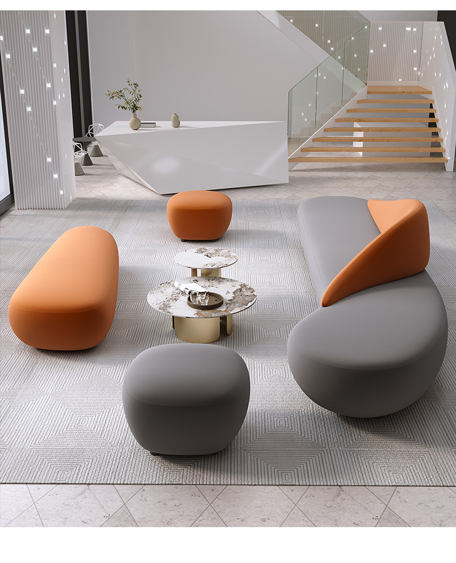
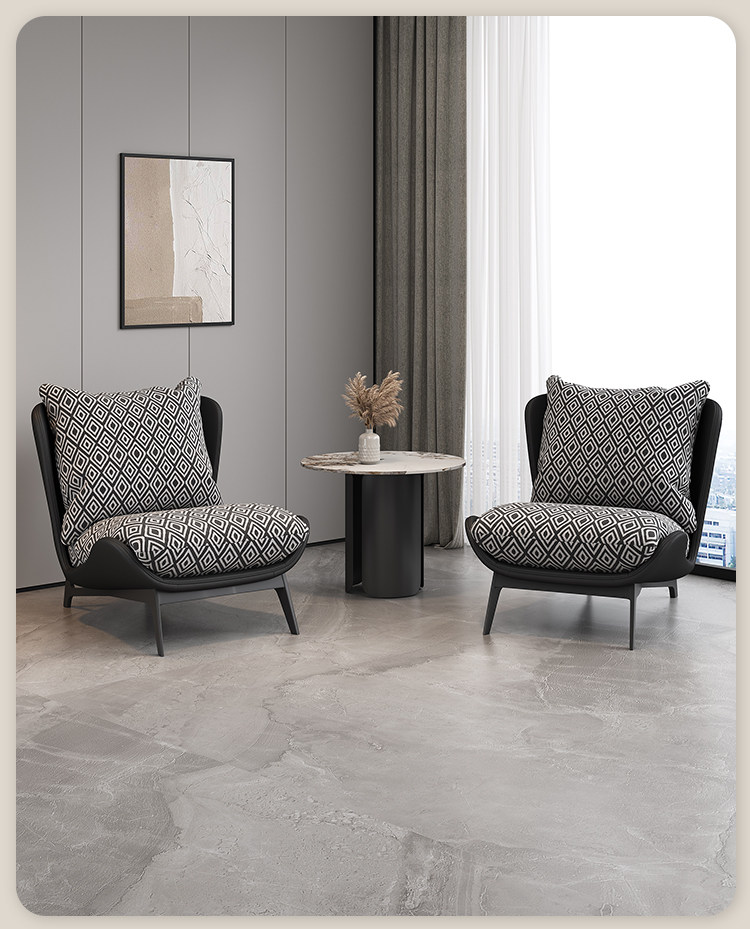
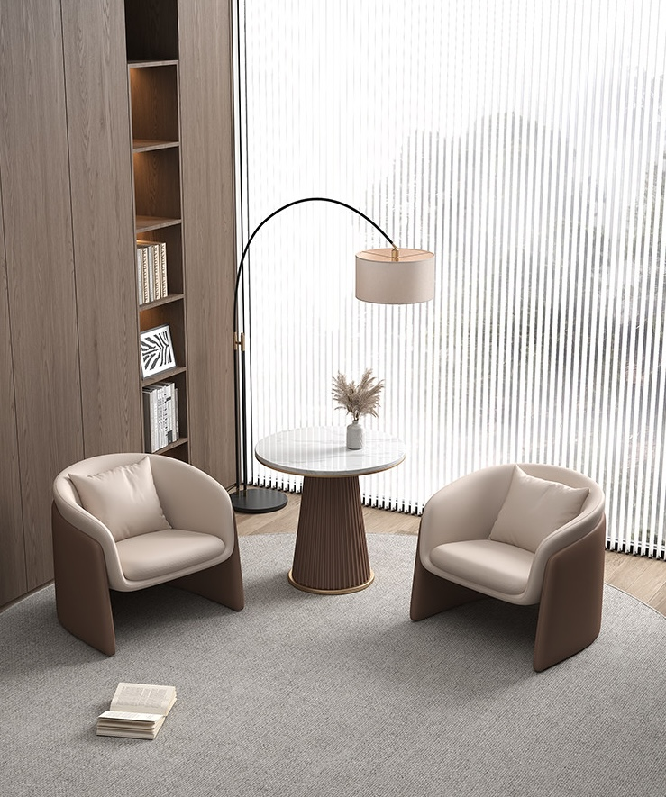
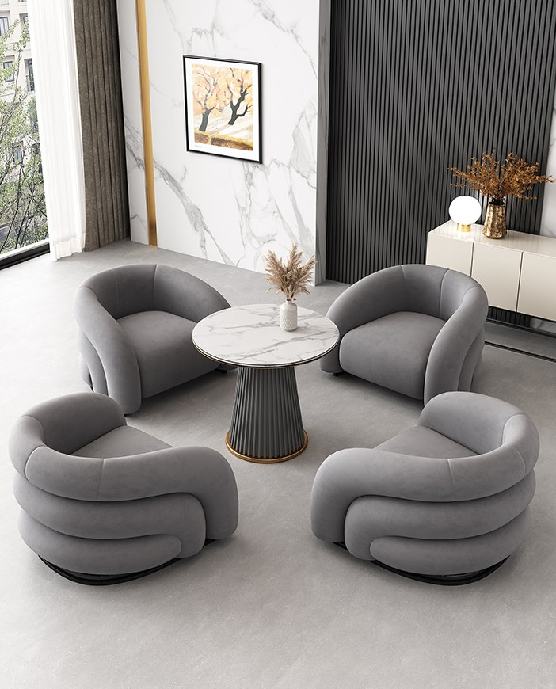

Living
Collection
Квадратные формы и выверенная эргономика. Наши диваны — это баланс между функциональностью и чистым искусством.







Smart Storage
"Порядок, возведённый в абсолют."


Texture & Quality
Natural Wood Architecture
Premium Leather Selection